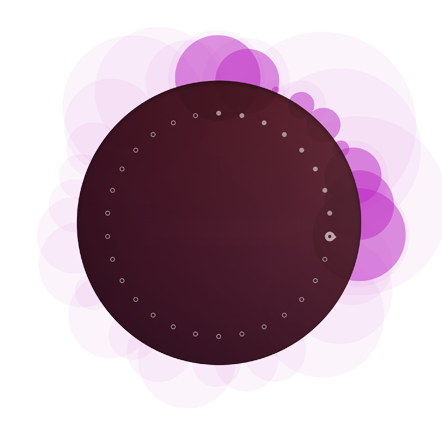
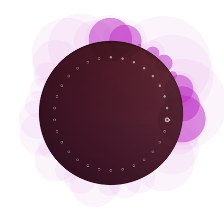

UP Clock
A beautiful way to see your time !
Design
The app was inspired on Ubuntu Touch welcome screen
Features
 

Clouds
Like in Ubuntu Touch, the app keeps changing, making a stunning animation !
Change Theme
You have the power, if you don't want to use the classic theme, you can change it !

Hide Button
You can hide the controls buttons for a perfect screenshot